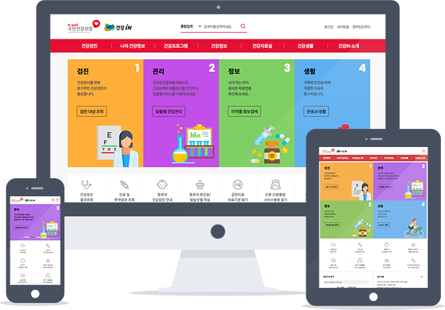

경력 웹 기획자 손수임의
개인 포트폴리오 사이트입니다.
개발 경력과 커뮤니케이션 능력으로 동료와 클라이언트의 니즈 모두를 잡는 웹 기획자.
사람을 위하는 방향으로 빠르게 발전하고 있는 웹.
이 흐름에 발 맞추고, 나아가 흐름을 주도하기 위해 끊임없이 공부할 것을 약속드립니다.
사람을 위한 웹 공간으로 회사의 성장을 구현하는 웹 기획자 손수임입니다. 잘 부탁드립니다.
2018년 4월 ~ 현재
2020. 1 - 2020. 7
Web Producer와 연관된 직업군으로는 a) Information Architect가 있고 b) Marketing, c) Web Developer – Database가 있다. a) Information Architect, b) Marketing의 경우 수긍이 되지만 c) Web Developer – Database의 경우는 좀 의외로 느껴졌다.
2020. 1 - 2020. 7
실제 공고에서는 그림에서 나타나지 않은 여러 가지 직업 타이틀들이 보였는데 이를 포함하여 주요 분류별 직업 타이틀을 아래에 정리했다.
2017년 1월 ~ 2018년 2월
2020. 1 - 2020. 7
주간 보고서 월간 보고서

메인 메뉴 구조의 통일
웹 접근성 관리 (WAI-ARIA)
jQuery 사용자 정의 함수로 만든 슬라이드 (Mobile Swipe)